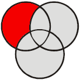

Not Even Odd
Musings and mumblings of a random nerd
Last 10 Posts:
| Tags see all tags | All Posts (alphabetically | chronologically) |
This is a series of posts which technically describes how Not Even Odd is built. It is primarily meant as a guide for static website creation using TiddlyWiki.
|  |
Static site with TiddlyWiki 1. content selection
Hosting with GitHub |
In the previous article, we discussed a FILTER and saw that
tiddlywiki --rendertiddlers "$FILTER" "$TEMPLATE" . text/plainwill render tiddlers selected by that FILTER, format them according to a TEMPLATE tiddler, and place them in the output directory. In this article, we give tips how to define that TEMPLATE tiddler.
Defining the template for the site might get tricky if you start from scratch. The best way to go is with the shadow tiddler $:/core/templates/static.tiddler.html(local) (v5.1.8) (current TW) and then tweaking it. You can overwite it or better just copy a new version of it into a new tiddler, say static_template.html, and tweak that to fit your site.
As you see from my site, I decided to keep things basic very much in line with the default (because TiddlyWiki has a clean default look and I'm not very good at HTML+CSS design).
TODO
this article must be completed... this will be done in next few days
$:/core/templates/static.tiddler.html
" <div class="tc-sidebar-scrollable"> and <div class="tc-sidebar-header"> that controls the Export:
FILTER='...'
tiddlywiki --rendertiddlers "$FILTER" --rendertiddler static_template.html . text/plain --rendertiddler static_stylesheet.css static.css text/plain
Musings and mumblings of a random nerd
Last 10 Posts:
| Tags see all tags | All Posts (alphabetically | chronologically) |